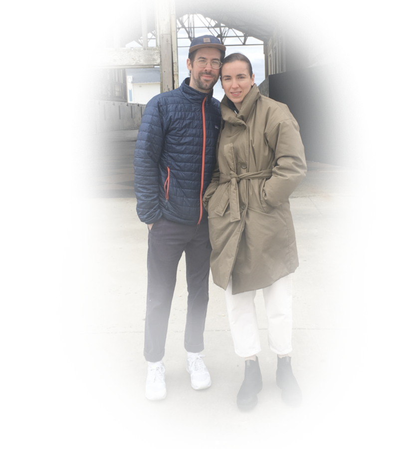

Celebration
The Franklin Institute
Saturday, August 29th
6:00 pm - 11:00 pm
The celebration will take place at The Franklin Institute, Philadelphia’s renowned science museum and one of the country’s oldest centers of science education and development. Directions to the museum can be found here.
Cocktail hour will commence at 6:00pm and take place throughout a selection of the Franklin Institute’s iconic exhibitions, including the one and only Giant Heart.
Dinner and dancing to follow in the Institute’s Benjamin Franklin Memorial Hall.
Did you know? The Benjamin Franklin Memorial Hall was prominently featured in the 2007 Nicolas Cage film National Treasure.

Weekend Bucket List
Philadelphia has so much to offer... why not make a weekend of it?
| Pho 75 | “The best pho I’ve ever had in my life” -- Alan |
| Joe’s Steaks | a delicious cheesesteak in Fishtown with its own condiment bar |
| Suraya | A.D.I.D.A.S.C. (all day I dream about Suraya’s Cruller) |
| Rittenhouse Square | a peaceful tree-filled park in the heart of Philadelphia |
| Reading Terminal Market | one of the country’s oldest markets with hundreds of possible foods to eat. We get the Reuben from Hershel’s every time we go :) |
| Franklin Square Mini Golf | The city’s only mini golf spot. Each hole is designed to be a miniature historic landmark. |
| Elfreth’s Alley | Constructed in 1702, Elfreth’s Alley is America's oldest continually inhabited street |
| The Mütter Museum | Philly’s Mütter Museum has a great collection of medical oddities, including slides of Einstein’s brain, slices of a human face, and a book bound by human skin. |
{kind=link}